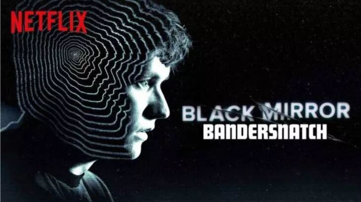
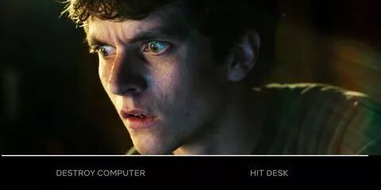
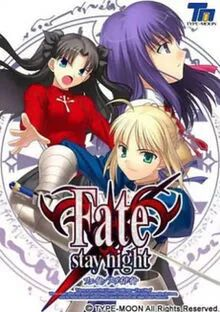
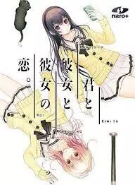

PS：以下部分没有剧透
最近听说Netflix的交互式电视剧《黑镜·潘达斯奈基》非常火。由于是交互式的，多瑙上看不了，所以就注册了个Netflix看了一下。
PS：让我颇为惊喜的是，Netflix上居然会有官方的中文字幕，对于英语不好的朋友来说还是很有用的。
故事讲述的是一个生活在1984年的一个看上去有点精神不正常的天才游戏程序员Stefan的故事。在剧播放的过程中，每隔一段时间荧幕上就会给出两个选项给观众选择。剧中的主角Stefan会根据这个选择，做出不同的抉择，从而影响故事的发展。

这不就是AVG（Adventure Game）游戏吗？
对于不熟悉这类游戏的读者，我在这里普及一下这类游戏。根据Wikipedia的定义，在AVG游戏類型中：
“遊戲採取玩家輸入或選擇指令以改變行動的形式。強調故事線索的發掘及故事劇情，主要考驗玩家的觀察力和分析能力。“
”该类游戏有時候很像角色扮演遊戲，但不同的是，冒險遊戲中玩家操控的遊戲主角本身的等級、屬性能力一般是固定不變並且不會影響遊戲的進程。”
不过大部分的AVG游戏中，剧情的呈现用的都是文字加上图片，近年来才开始加入越来越多的视频。像是著名的Fate Stay Night等作品，有大量的场景描述来支持其单薄的图片。就算是如School days这样的有大段视频的作品，画质也很不怎么样。

这也就是为什么我看完这部电影如此兴奋了，美剧的画质比起之前的那些AVG游戏的画质，绝对是有着质的飞越。再加上美剧中，或者说是黑镜中独特的叙事方法，让人有非常独特的体验。
通常来说，在一个好的AVG游戏中，剧情的不同分支的走向往往不会是一个简单的树状结构。并不是所有的选项都会导向两条不同的结局，有的选项并不会影响剧情的走向，而有的选项则是一个开关，会对后续的剧情中的选项有一定的影响。
至于那些选项是开关，会对后续的哪个剧情会有影响，则是会大大地决定游戏的难度，也是游戏中有意思的地方。在《黑镜·潘达斯奈基》中，由于整个剧情的规模并不是特别大，所以穷尽大部分的可能性并不需要特别久。
而且游戏中由于在不同的地方达到结局以后，会让你在不同的地方重新选择，一定程度上告诉了你哪些是重要的选项，哪些则是不重要的，大大减少了人们探索各种结局所需要花费的时间。
相比来说，在某些AVG游戏中，某些结局的出现需要连续选对x个选项才能出现，而且对于哪些选项起了作用完全没有任何提示。对于这样的游戏，大部分人一般都只好求助攻略了。
---------------------------------------------------
PS：以下部分有比较隐晦的剧透
在《黑镜·潘达斯奈基》中，采用了一个很有意思的设计，即让剧内的人和剧外的观众产生“互动”。具体互动的方式，与AVG中的《你与她与她的恋爱》有很类似的地方，即在剧情中让主角意识到剧外观众的存在。
在《黑镜·潘达斯奈基》中，由于男主意识到了观众的存在，基于其理解，会导致各种不同的剧情走向。
而在《你与她与她的恋爱》中，则是游戏中的AI开始直接与玩家展开了对抗。

这样的设计无疑是超出我预期的，即使以AVG游戏的标准来说，《黑镜·潘达斯奈基》也决定算得上是一款top 10%的作品。
PS：剧透完
---------------------------------------------------
总之这部片子强烈推荐啦。